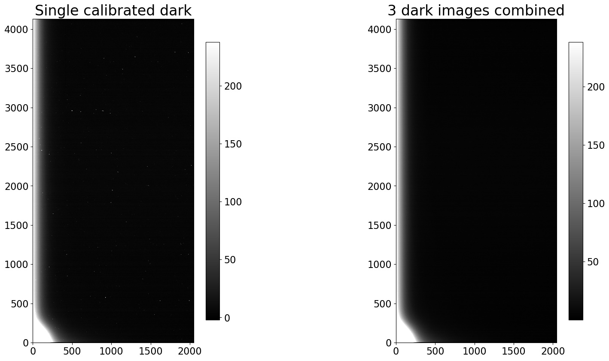

Combine calibrated dark images for use in later reduction steps
The final step is to combine the individual calibrated dark images into a single combined image. That combined image will have less noise than the individual images, minimizing the noise added to the remaining images when the dark is subtracted.
Regardless of which path you took through the calibration of the biases (with
overscan or without) there should be a folder named either example1-reduced or
example2-reduced that contains the calibrated bias and dark images. If there
is not, please run the previous notebook before continuing with this one.
from pathlib import Path
import os
from astropy.nddata import CCDData
from astropy.stats import mad_std
import ccdproc as ccdp
import matplotlib.pyplot as plt
import numpy as np
from convenience_functions import show_image
# Use custom style for larger fonts and figures
plt.style.use('guide.mplstyle')
Recommended settings for image combination
Click here to comment on this section on GitHub (opens in new tab).
As discussed in the notebook about combining images, the recommendation is that you combine by averaging the individual images but sigma clip to remove extreme values.
ccdproc provides two ways to combine:
- An object-oriented interface built around the
Combinerobject, described in the ccdproc documentation on image combination. - A function called
combine, which we will use here because the function allows you to specify the maximum amount of memory that should be used during combination. That feature can be essential depending on how many images you need to combine, how big they are, and how much memory your computer has.
NOTE: If using a version of ccdproc lower than 2.0, set the memory limit a factor of 2-3 lower than you want the maximum memory consumption to be.
Example 1: Cryogenically-cooled camera
The remainder of this section assumes that the calibrated bias images are in the
folder example1-reduced which was created in the previous notebook.
calibrated_path = Path('example1-reduced')
reduced_images = ccdp.ImageFileCollection(calibrated_path)
Make a combined image for each exposure time in Example 1
There are several dark exposure times in this data set. By converting the times in the summary table to a set it returns only the unique values.
darks = reduced_images.summary['imagetyp'] == 'DARK'
dark_times = set(reduced_images.summary['exptime'][darks])
print(dark_times)
{300.0, 70.0, 7.0}
The code below loops over the dark exposure times and, for each exposure time:
- selects the relevant calibrated dark images,
- combines them using the
combinefunction, - adds the keyword
COMBINEDto the header so that later calibration steps can easily identify which bias to use, and - writes the file whose name includes the exposure time.
for exp_time in sorted(dark_times):
calibrated_darks = reduced_images.files_filtered(imagetyp='dark', exptime=exp_time,
include_path=True)
combined_dark = ccdp.combine(calibrated_darks,
method='average',
sigma_clip=True, sigma_clip_low_thresh=5, sigma_clip_high_thresh=5,
sigma_clip_func=np.ma.median, sigma_clip_dev_func=mad_std,
mem_limit=350e6
)
combined_dark.meta['combined'] = True
dark_file_name = 'combined_dark_{:6.3f}.fit'.format(exp_time)
combined_dark.write(calibrated_path / dark_file_name)
INFO: splitting each image into 2 chunks to limit memory usage to 350000000.0 bytes. [ccdproc.combiner]
INFO: splitting each image into 2 chunks to limit memory usage to 350000000.0 bytes. [ccdproc.combiner]
INFO: splitting each image into 2 chunks to limit memory usage to 350000000.0 bytes. [ccdproc.combiner]
Result for Example 1
A single calibrated 300 second dark image and the combined 300 second image are shown below.
fig, (ax1, ax2) = plt.subplots(1, 2, figsize=(20, 10))
show_image(CCDData.read(calibrated_darks[0]).data, cmap='gray', ax=ax1, fig=fig)
ax1.set_title('Single calibrated dark')
show_image(combined_dark.data, cmap='gray', ax=ax2, fig=fig)
ax2.set_title('{} dark images combined'.format(len(calibrated_darks)))
Text(0.5, 1.0, '3 dark images combined')

Example 2: Thermoelectrically-cooled camera
Click here to comment on this section on GitHub (opens in new tab).
The process for combining the images is exactly the same as in example 1. The only difference is the directory that contains the calibrated bias frames.
calibrated_path = Path('example2-reduced')
reduced_images = ccdp.ImageFileCollection(calibrated_path)
Make a combined image for each exposure time in Example 2
In this example there are only darks of a single exposure time.
darks = reduced_images.summary['imagetyp'] == 'DARK'
dark_times = set(reduced_images.summary['exptime'][darks])
print(dark_times)
{90.0}
Despite the fact that there is only one exposure time, we might as well reuse the code from above.
for exp_time in sorted(dark_times):
calibrated_darks = reduced_images.files_filtered(imagetyp='dark', exptime=exp_time,
include_path=True)
combined_dark = ccdp.combine(calibrated_darks,
method='average',
sigma_clip=True, sigma_clip_low_thresh=5, sigma_clip_high_thresh=5,
sigma_clip_func=np.ma.median, signma_clip_dev_func=mad_std,
mem_limit=350e6
)
combined_dark.meta['combined'] = True
dark_file_name = 'combined_dark_{:6.3f}.fit'.format(exp_time)
combined_dark.write(calibrated_path / dark_file_name)
INFO: splitting each image into 12 chunks to limit memory usage to 350000000.0 bytes. [ccdproc.combiner]
Result for Example 2
The difference between a single calibrated bias image and the combined bias image is much clearer in this case.
fig, (ax1, ax2) = plt.subplots(1, 2, figsize=(20, 10))
show_image(CCDData.read(calibrated_darks[0]).data, cmap='gray', ax=ax1, fig=fig)
ax1.set_title('Single calibrated dark')
show_image(combined_dark.data, cmap='gray', ax=ax2, fig=fig)
ax2.set_title('{} dark images combined'.format(len(calibrated_darks)))
Text(0.5, 1.0, '10 dark images combined')